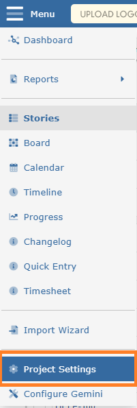
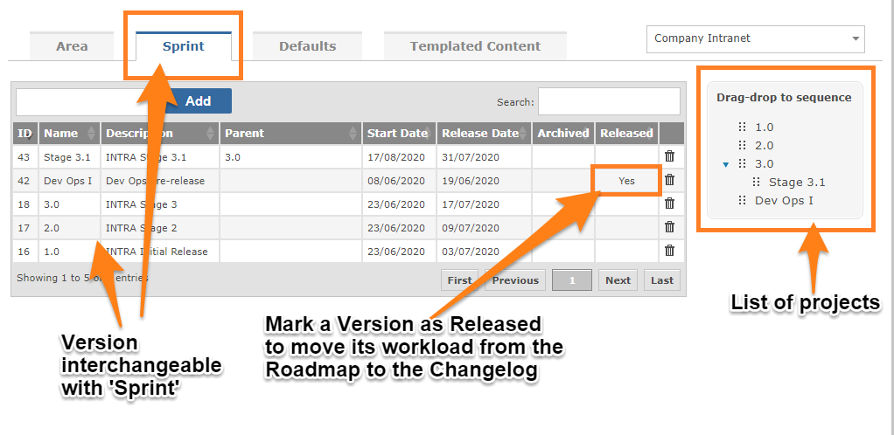

There is no difference in Gemini between Versions and sprints. Hence the image shows the word Sprint, but it could just as easily say Versions, and would if it was not using Agile taxonomy.
Versions represent time-boxed work to be done. Once the Version is complete, tangible results are expected.
The objective is to define Versions that contain the work to be completed. Work that needs to be completed but is not yet assigned to a Version is known as the Backlog.
Items in the Backlog are assigned to Versions, and scheduled in the process. Resources are assigned and delivery dates are determined.
Any project can use Gemini's Version time-boxing.

Like Components, Versions can be organized into a hierarchical structure (nested):

Every Version should be allocated a start and completion date. This is very important if you wish to use Gemini's Progress page with its Burndown and Burnup charts.
NoteVersions can only be maintained by users who have "Can Manage Versions" permission.